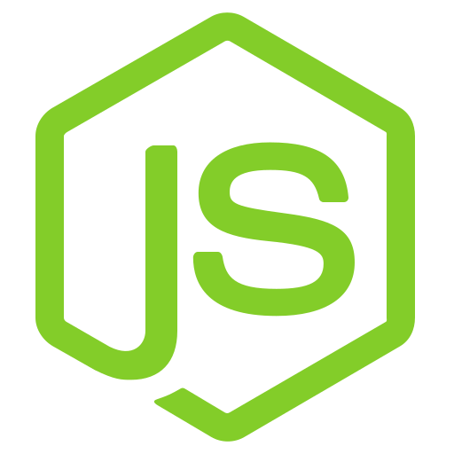

| TECNOLOGIA |
LOGOTIPO |
DESCRIÇÃO |
VÍDEO |
| Javascript |

| JavaScript é uma linguagem de programação interpretada estruturada,
de script em alto nível com tipagem dinâmica fraca e multiparadigma |
|
| Vue.js |

| Vue.js é um framework JavaScript usado para criar interfaces de usuário (UIs)
e aplicações web interativas. |
|
| Node.js |

| Node.js é um ambiente de execução JavaScript que permite rodar código fora do navegador,
ou seja, no servidor. |
|
| MySQL |

| MySQL é um banco de dados relacional (RDBMS - Relational Database Management System)
muito usado para armazenar e gerenciar dados estruturados. |
|
| MongoDB |

| MongoDB é um banco de dados NoSQL (não relacional) que armazena dados em formato de documentos JSON. |
|